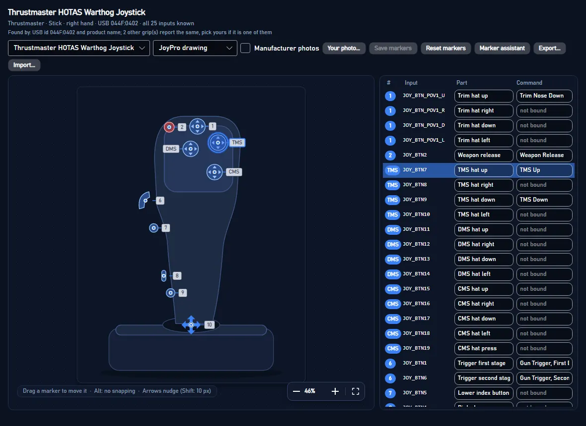
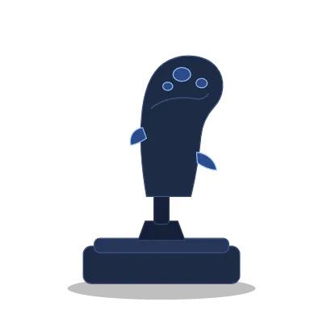
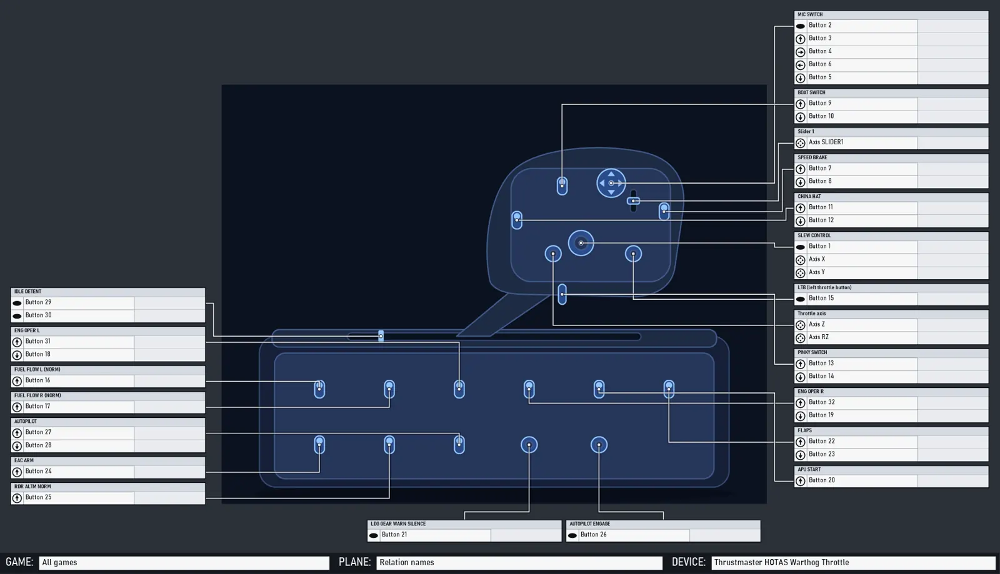

From docs/device-reference.md in the repository (generated, always the current text).
When a device is picked or connected, the Layout page, Bind Studio's "Bind on the picture" and the device cards show what it looks like, where its buttons, hats and axes are, and what each one does in the profile.

The system has to work for every device on the market and for devices JoyPro never saw. It rests on four rules:
- Identify every device, and ask once when the device itself does not tell.
- Show the best picture there is, and never an empty box.
- Put a marker only where the position is known. A guessed marker is worse than none.
- Let coverage grow by sharing positions, without shipping anyone's photo.
#1. Identification
DeviceIdentifier (shared by the engine and the GUI) looks at the USB VID:PID, the HID product name and the inputs
the device reports. It checks them against the catalog (DB/Devices, 340 models).
-
It tries VID:PID first, then the exact product name, then part of the name.
-
Bases with exchangeable grips (Virpil WarBRD, WarBRD-D and MongoosT bases, VKB Gunfighter and Gladiator, the VPforce Rhino, Thrustmaster's Warthog base). Each grip entry records:
- its base (
base) and the other bases it fits (fitsBases): the VPC grip connector, the Rhino adapters; - its own axes, buttons and hats.
- its base (
-
DeviceChoices.Rankranks the candidate grips (or models) by likelihood from what the device reports. The ranking is tolerant on purpose:- Driver software (VPC Configurator, VKBDevCfg, the Rhino configurator) adds buttons through shift layers and remaps them. A higher button count still fits, and a multiple of the grip's count fits best.
- Hats reported as buttons still fit.
- A missing axis counts against a grip but does not rule it out.
- The hand in the name ("L-VPC ...") counts strongly against grips for the other hand.
- The USB id a grip is known to report counts for it. Another USB id counts against it.
-
DeviceChoices.Questiondecides what to ask:- grip: the base does not say which grip is on it. Virpil names the base ("L-VPC Stick WarBRD"); VKB names the grip ("... Modern Combat Pro Twist") and is not asked. The question is "Which grip is on your Virpil VPC WarBRD Base?".
- model: one USB id for several products, and nothing else tells them apart.
- unknown: the device is not in the catalog. "Which device is this?" offers a catalog search. If the device is not in the catalog, the user picks the kind of device. The kind is guessed from the name and the inputs.
-
"Which one is it?" is shown over the picture (the Layout page):
- the candidates as tiles with their reference photo (or JoyPro's drawing), most likely first, "Most likely" and a percentage on each;
- "Keep the most likely", "Not listed: search the catalog", "Not now".
The answer is kept per device in
<data>\DeviceReference\grips.json. It is either a model id orclass:<class>. The device cards, the HUD and the engine (hud devices --grip) use it from then on. -
Asked again at any time:
Model...on a device of the Layout page's list (also after an answer, a wrong pick or a weak match such as "Placeholder ... (match 30%)"):Choose another model...: the question again with the device's candidates (its identification, the shown model and its base's grips, the models of its USB id and of the same maker and kind), "Find your device" one click away;This is not my device: asked like an unknown device; until the user picks, the device is kept as its kind;Undo the last model choice: the earlier answer (or JoyPro's own identification) comes back.
#Reset to default
Reset to JoyPro's default... (a device's Model... menu on the Layout page, and Reset to default... in the Edit
panel "Picture and markers") puts the shown model's picture back to JoyPro's default after a confirmation: the user's
marker positions (Layouts\<model>.*, Markers\<model>.*), tables and lines (Callouts\<model>.* and the cheat
sheet pointer in Callouts\devices.json, i.e. the picture variant last shown), renamed parts (Legend\<model>.json),
the user's photo (Photos\<model>.*), the user's definition of the model (Devices\<model>.json) and the layout file
the profile uses for the device (engine layout image <device> --clear; the file itself stays). Nothing is deleted:
the files move to <data>\DeviceReference\ResetBackups\<time>\ and Undo the reset of <device> puts everything back
(also the profile's layout file, layout image --set). Settings > Drawings > Reset all my layout changes... does
the same for every model and device (GUI: Services/DeviceLayoutReset.cs, MainWindowViewModel.LayoutReset.cs).
#Several views on one page
JoyPro 1 layouts often combined several pictures of one device (front and side) so every button is covered. On the
Layout page, Several views (next to the drawing style; Page with n views once there is a page) opens the device's
page instead of its one picture:
- it starts with the picture shown;
Add viewlists JoyPro's other pictures of the model (line drawings, photos, the schematic): each view is one picture with its own markers, tables and lines (its callout sheet,Callouts\<model>.<picture>.json);Your image...adds an image of the user's own (no markers); - a click selects a view; drag moves it; the corner handle or the mouse wheel scales it (arrow keys nudge); the view's
tables and lines move and scale with it;
Arrangeplaces the views side by side as big as the page allows; - the page format: A4 or Letter, portrait or landscape (300 dpi) for printing, 16:9, 21:9, 32:9 for a screen;
Edit this viewshows the view's picture in the normal editor (markers, tables, lines);Back to one picturekeeps the page;Remove pagedeletes it (the device shows its one picture again, the views keep their sheets).
Saved per model as DeviceReference\MultiView\<model>.json (format joypro-multiview: page, views with sheet
or image, x, y, scale, width, height; MultiViewLayout, shared by the engine and the GUI). A device
without a page keeps its one picture as before. The cheat sheets (layout render, the profile's layout export) print
the page when it has two or more views: each view drawn like a sheet of its own with the device's binds, placed and
scaled, then the GAME / PLANE / DEVICE band (EngineMultiView). CLI: layout multiview <file> [--views <folder>] [--png <file>] [--device <name>] [--game <g> --plane <p>]. Reset to default moves the page with the model's other
files.
#Unmapped and bound inputs
Nothing bound disappears from the picture:
- Every hat has its press row. When the catalog does not say which button presses a hat, the row is there, empty: "not mapped: click to map it". A click opens the mapping in the side panel: press the hat on the device, or pick one of the bound inputs without a place. The mapping is saved as the user's definition of the device and goes into a correction (Send correction) like any other change. Example: the WinWing ViperAce (EX) grip's trim hat press is button 19 (WinWing's manual drawing), now in the catalog.
- An input the profile binds that the model has no part for (a driver's extra button) is a stand-in part
(
other.bound.*) without a spot: it is listed under "Other controls" with its bind. Stand-ins and unmapped presses are screen-only and never part of a saved definition.
The kinds of device (DeviceClasses) are: stick, throttle, HOTAS, pedals, panel, button box, keyboard, gamepad, wheel,
yoke, collective, quadrant, MFD, base and virtual.
#2. Picture sources
Pictures are shown best first. The picture strip over the canvas has one button per picture:
- Your layout.
- The user's own layout file: a JoyPro 1
.layout, a picture he chose, or a layout saved in JoyPro. - For JoyPro 1 layouts, the bound commands are drawn as plain text at the user's positions, in the layout's own font, size and color, like JoyPro 1's cheat sheets. The boxes and lines are part of his picture.
- The user's own layout file: a JoyPro 1
- Your photo. Pick it with Your photo... or drop it on the picture. It is copied to
<data>\DeviceReference\Photos. - JoyPro's own drawing of the model (
DB/DeviceDrawings, see JoyPro's drawings). It ships with JoyPro, so nothing is downloaded and no consent is needed. JoyPro's curated positions and the shipped callout sheet of the model apply to it directly. It is painted in the user's drawing style: lines, or cel-shaded (flat colours under bold outlines), in JoyPro's colours or the user's own. - The maker's reference photos.
- There is one per view: main, front, side, back, top, base, three-quarter, and button map (the maker's sheet).
- They are fetched at run time on the user's PC. Each comes from an address on the maker's own hosts, or from a
listed review site or Wikimedia Commons when the maker has none, with the Wayback snapshot as the fallback. Each is
checked against its SHA-256 and kept in
<data>\DeviceReference\ReferencePhotos(see Reference photos on this PC). - Only with the user's consent for that device (
DevicePhotoConsent, docs/privacy.md "Device photos"): JoyPro asks once per device model ("JoyPro found the product photo of your ... Download it and show it here?" Yes / No / Always for all my devices / Never) on this page and on the Start page's device card. Without a yes nothing is downloaded and JoyPro's drawing or the class outline is shown. The switch "Maker's photo of this device" changes the answer of the shown device; Settings > Privacy sets Ask / Always / Never for all devices (the old "Manufacturer photos" switch, off = Never).DeviceImageCachechecks the consent before every download and before a cached photo is shown, also for the HUD and the Auto Assign pictures. A device card that shows JoyPro's own drawing does not ask; the Layout page still offers the photo.
- JoyPro's schematic drawing of the model, but only when it is recognizable. That is the case for devices whose parts sit in rows anyway (pedals, panels, MFDs, quadrants, yokes, collectives) and for sticks, bases and throttles with up to 14 parts. A grip with 30 parts drawn in rows is not recognizable.
- JoyPro's outline of the device class (
DeviceClasses.Drawing): a clean drawing of a stick, throttle, HOTAS, pedals, panel, button box, keyboard, gamepad, wheel, yoke, collective, quadrant, MFD frame or base, and a ghost outline for virtual devices (vJoy). The outline has no markers; the legend lists every input. A model or class always has one of these, so the picture is never empty.
The Layout page shows the first of these that it can, and the picture strip offers the others in this order; the Start page's device cards use the same order.
A picture picked in the strip is kept at once (2.5.0 tester report: "Photo 4 · Virpil" fell back to JoyPro's line
drawing, and Save stayed off because nothing was unsaved): <data>\DeviceReference\pictures.json holds per device (its
name with the GUID, else without it; a catalog model by its id) <model id>|<picture id> (vendor:<address>,
lineart:<content key>, user, schematic, class). Whenever the device is shown again (a refresh, a rename, the next
start) that picture comes first if it is still there and loads; another model shown for the device (a grip picked) does
not take it over. The markers belong to the picture: each picture keeps its own positions (see section 3). The status
line says "

More: docs/device-reference/class-*.png. JoyPro's schematic drawings and class outlines are drawn from the catalog's
data.
#JoyPro's drawings
JoyPro ships its own drawings of the devices in EngineOnly_Runtime/DB/DeviceDrawings: one file per model and view,
format joypro-device-drawing. A drawing shows the device's outline and the contours of its buttons, hats, switches and
panels as vector paths, plus (optionally) flat colour regions for the cel-shaded style. It contains no picture.
{ "format": "joypro-device-drawing", "version": 1, "model": "vkb-gnx-sem", "view": "top", "key": "3f0c1d2e4a5b6c7d",
"class": "panel", "title": "JoyPro drawing", "width": 1200, "height": 900, "outlineWidth": 3.6, "detailWidth": 2.5,
"paths": [ { "role": "outline", "d": "M120,80Q140,60 ...Z" }, { "role": "detail", "d": "M..." } ],
"fills": [ { "color": "#444444", "rule": "evenodd", "d": "M...Z" } ] }
paths: absoluteM L Q C Zonly. Three stroke weights:outlineis the silhouette (bolder),detaila control or panel contour,minora fine line (seams, screw heads; drawn at 0.65 of the detail width).fills(optional): the cel-shaded style's flat colours from a small fixed palette, drawn under the paths.key: names the curated position set (DB/DeviceLayouts) the drawing belongs to:DeviceLineArt.OpaqueKeyof that set's photo hash. The drawing has the same width and height as that set's picture, so the set's positions (0..1) and its shipped callout sheet apply 1:1.- Cockpit grips:
DB/Cockpits/line-drawings, withaircraftanddeviceinstead ofmodeland an optionalpartsobject (part id → [x, y], 0..1) for the Cockpits page's tables. - Download the reference photo (Layout page, under the picture chips): shown while a line drawing is selected that
was made from one of the maker's photos (found by the drawing's key = the photo's hash, else the same view). The click
downloads that photo into the reference photos on this PC (
<data>\DeviceReference\ReferencePhotos, SHA-256 checked, web archive fallback) with a progress bar; the device's photo consent is asked first when it is not given yet (the download follows the yes). The photo is then a picture of its own (e.g. "Photo 2 · VKB"); JoyPro's positions come along when the file is the one JoyPro drew from (same hash), otherwise it is shown as a reference without markers. Errors are said in plain words (offline, removed from the site, busy, not a picture); "Show in folder" opens the saved file.
#How the drawings are made
Nothing is traced from a photo any more where a better source exists. Three ways, best first:
-
The game's own grip for devices that replicate a real aircraft's grip (Thrustmaster Warthog = A-10C, the F-16C and F/A-18C grips):
engine devices reference mesh-render --aircraft <plane> --grip stick|throttle --view <yaw>,<pitch> --folder <dir> [--skip <regex>]renders the grip of the game's cockpit model (DCS World, read like the cockpit pictures: plain files only, nothing written) without textures, with the part of every pixel and the model's named parts (STICK-BTN-TMS...).python tools/device_drawings.py mesh <dir> <part name> [--crop ...] [--components n]makes a drawing part of it: the silhouette, the outline of every separate piece, flat colour regions, and the named parts (or, for a model without names, every separate piece asc01,c02... with a labeled preview) as keys. The device's spec maps the keys to its parts by the maker's button map and adds what the device has and the aircraft has not (its base, a paddle, extra buttons). The source line credits the game. -
A vector spec (
tools/device_drawings/<model>.<view>.json,python tools/device_drawings.py build <model>): the silhouette and body parts as smooth paths, every control as a glyph of the shared library (button, hat 4/8-way with its direction arrows and press, mini-stick, toggle, rocker, wheel, encoder, knob, slider, lever, gimbal, twist, pedal:device_drawings.py glyphsshows them) at its spot, positions from the maker's button map. Shared parts (tools/device_drawings/parts, e.g. the Virpil MT-50 handle) are included and mapped per model. A drawing in its own frame gets a position setDB/DeviceLayouts/<model>.drawing-<view>.jsonwith photo kindlineartand the drawing's key; the engine arranges its callout sheet. A group can also carryphotoSet: its parts are then written into that maker's photo set too. -
A template drawing for the rest (
python tools/device_drawings.py auto <model> ...): the traced drawing's silhouette smoothed into one clean outline, the big inner contours kept, every curated part drawn as the glyph of its type at its curated spot (no traced inner lines, screw heads or texture). It keeps the traced drawing's frame and key. -
Composed views (
python tools/device_drawings.py compose <model> [--views main,side,main~] [--grid <folder>]): several curated photo views of the model side by side, each as its template drawing (parts/<model>-<view>.json),<view>~a mirrored copy of a view's outline for the far side, and the controls no photo shows placed by hand from the maker's button map. The recipe is the spec'scomposeblock (views,place: part, view,uv0..1 of that view, optional glyph and size;notPhysical,unplaced,mappingSource);--gridwrites a preview with a 0..1 grid per view for placing by eye. The result is the model's drawingmainwith its own position set, like a vector spec.
A spec's own control can be placed in 3D too: "anchor3d": <index of the game-model include> places it through that
include's view (a button the replica adds to the aircraft's grip).
A single-photo-to-3D model (TripoSR, tested on the VKB MCG Pro) melts the controls into blobs: not used.
#3D view
Devices with a 3D model (a game's grip model, or a downloadable CAD / 3D file of the device) get a rotatable view: 3D view on the Layout page's toolbar and on the Bind page's picture (shown only for such devices). Drag turns it (sideways around the vertical, up and down between the pitches), the wheel zooms, a double click (or Home) resets it, the arrow keys step. Every part of the device sits at its spot on every frame (a part facing away is a hollow dashed ring), the picked part is ringed and its bound command shown, held inputs light up, a click picks the part (the same selection as the flat picture), a relation dropped on a part is bound there. The 3D view is the default where a device has one; the toggle switches to the flat drawing, which is what the cheat sheets print and what Edit mode works on.
Not shipped, downloaded per device. The 3D views are release assets, not part of JoyPro's package:
-
Release
device-3d-v1(published with--latest=false): one zip per device model (<model>.zip:turntable.json,frames/*.png,CREDITS.txtwith the model's source and licence) andmanifest.json(joypro-device-3d-packs,packVersion1; per packmodel,asset,size,sha256,version,built,source). -
When the device cards find a connected device whose model has a pack, JoyPro follows Settings > Privacy Pictures from JoyPro's releases (cockpits, 3D device views) (the setting of the cockpit picture packs): Ask shows "A 3D view of ... is available (x MB). Download it?" on the Layout page and the Start page (Download, Not now for this session, Always download, Never); Always downloads it at once; Never does not look.
-
The zip is checked against the manifest's SHA-256 and holds only
turntable.json,CREDITS.txtand PNGs inframes/; it is unpacked to a temporary folder and moved to<data>\DeviceReference\Turntables\<model>(pack.jsonkeeps the version; a newer version in the manifest replaces it). -
Offline, without a pack or with Never: the flat drawing (nothing else changes).
-
Code:
Services/DeviceTurntablePacks.cs,MainWindowViewModel.Device3D.cs;JOYPRO_DEVICE_3D_FEEDpoints JoyPro at another feed (a folder or address; tests, checking packs before they are published). -
Build:
powershell -File tools\build_device_3d_packs.ps1 [-Source <turntables>] [-Out <folder>] [-Model <id>,...](defaults:JOYPRO_DEVICE_3D_DIR,<JOYPRO_RELEASE_DIR>\device-3d; both outside the repository). An unchanged model keeps its zip and version, a changed one gets the next version. The script uploads nothing. -
Made by
python tools/device_drawings.py turntable <model> [--steps 24] [--pitches 5,25,45] [--size 420] [--out <folder>](default folderJOYPRO_DEVICE_3D_DIR, outside the repository): it callsengine devices reference mesh-render ... --turntable <steps> --pitches ... --keep-top <f> --anchors <files>, which renders the grip without textures in a cel style (flat colours in two tones, light outlines between the model's parts, transparent background) from every direction, places the drawing's points in 3D through the depth of the view they were picked on, and records where each lands per frame and whether it faces the camera. The spec'sturntableKeepTopframes the upper part of a long stick. -
From a 3D model file instead (.glb / .gltf / .stl / .obj, e.g. a maker's AR model or a community scan): a recipe
tools/device_drawings/mesh/<model>.json(the file name and where it came from, which meshes belong to the device, the front view's yaw,sourceandlicencefor the pack's CREDITS.txt, and the parts picked on a few views) and the file itself in<JOYPRO_DEVICE_3D_DIR>\.models\(never in the repository).turntable <recipe> --views <folder>draws the pick views with a pixel grid;turntable <recipe>renders the same cel-shaded frames in Python (tools/device_mesh_turntable.py, needs numpy and trimesh). -
<model>/turntable.json(frames: pitch, yaw, file,pointspart -> [x, y, seen];source, optionallicence) andframes/*.png(24 x 3 frames, about 1.5 MB per device), credited on the view ("Rendered from DCS World's A-10C cockpit model"). -
Code:
Services/DeviceTurntable.cs,Views/Controls/TurntableView.cs,MainWindowViewModel.WorkspaceTurntable. -
Devices with a 3D view (2026-10-18, 14 packs): Thrustmaster Warthog stick and MKII stick, Warthog throttle (the grips), the F-16C Viper and F/A-18C Hornet grips (Warthog/AVA bases and the VPforce Rhino), the WinWing NavyAce and CarrierAce F/A-18 grips, the VKB Gunfighter F-14 grip and the Warthog grip on the Gunfighter, the Logitech X56 stick (Logitech's own 3D model).
#Complete devices
engine devices reference completeness [query] [--missing] [--list <file>]: per model whether the best shipped
picture (JoyPro's drawing first) places every part with an input: every button, each hat with its directions and press,
every axis, mini-stick, slider, encoder, toe brake. A part a set lists as not physical: ... (VKB / Virpil logical
buttons, a lever position such as the Warthog's idle detent) counts as done. DeviceCompletenessTests keeps the drawn
devices complete input by input. Numbers on 2026-10-18: 132 of 310 models with inputs complete (120 after the first batch) (107 before the first
batch of composed views).
#Correcting JoyPro
When JoyPro forgot an input or put it on the wrong spot, the user fixes it on the Layout page and can send the fix:
- A card over the picture says how many inputs have no place ("3 inputs have no place on the picture: press them on your device to place them") with Place them (the marker assistant, waiting for the first press).
- The marker assistant has Add control: the kind (button, 2/3-way switch, hat 4-way, hat 4-way + press, hat 8-way, mini-stick + press, encoder, axis / slider, wheel) and an optional name; it asks for each input in turn (each hat direction, then the press; a mini-stick's axes by moving them), then for the spot. Remove from picture takes a wrongly placed part off. Moving (drag), renaming (the legend) work as before.
- Everything is kept locally as the user's layer over JoyPro's data: positions per picture
(
<data>\DeviceReference\Layouts, parts taken off asremoved by the user), new or changed controls as the user's definition of the model (<data>\Devices), used by the Layout page, Visual Assign, the cheat sheets and the HUD. - Send correction to JoyPro... writes
<data>\DeviceReference\Corrections\<model>-<time>.json(joypro-device-correction: model, VID:PID, the picture's kind and key, the changed positions, removed parts, added or changed controls; nothing personal) and opens the prefilled GitHub issue form "Device layout correction" (.github/ISSUE_TEMPLATE/device-layout-correction.yml) in the browser; the user decides there. A correction too long for the address is attached by hand. - The maintainer:
python tools/device_corrections.py show|merge <file> [--controls](into the drawing's specpositions/unplaced, or the photo's curated set; controls into the catalog with--controls).
#Drawing style
How the drawings are painted is the user's choice, the same in every renderer (the Layout page, the callout sheets, the
device cards, the Cockpits page, the engine's cheat sheets and exports): DrawingStyle (engine/DeviceReference).
| Style | Lines (the outline and the contours) or Cel-shaded (flat colours under bold outlines; default on screen) |
| Colours | JoyPro (the theme's: light lines on JoyPro's dark surface with the accent blue for leaders, dark lines on the light surface), Manual (white lines on near-black, light grey leaders), Blueprint (light lines on blue), Print (black on white), Custom |
| Own colours | line colour, page colour, leader/label colour (#RRGGBB; empty = the preset's) |
- Settings > Drawings has two editors: the screen (Layout page, device cards) and Cheat sheets and exports (empty = the screen's). The Layout page has Lines | Cel-shaded next to the picture; the cheat sheet export options have the export editor.
- Kept in
<data>\DeviceReference\settings.json(DrawingStyle,ExportDrawingStyle, a spec likemode=cel;preset=manual;ink=#F2F2F2). The engine reads them there and takes--drawing-style lines|cel|<spec>,--drawing-preset joypro|manual|blueprint|print|custom,--drawing-ink,--drawing-paper,--drawing-accent(layout render,layout callouts,setup render,devices reference drawings); the GUI passes its export style. - On JoyPro's drawings the leader lines of the tables take the style's leader colour.
- A drawing without colour regions is painted in the line style also when cel-shaded is chosen.
#Callout sheets and exports
engine layout callouts --model <id> uses JoyPro's drawing of the model with its curated positions and shipped sheet
when there is one (--schematic: the schematic drawing). The cheat sheets and the setup wizard's sheets do the same. A
sheet saved on the Layout page on JoyPro's drawing keeps "photo": { "kind": "lineart", ... }; the engine draws the
drawing itself (no local picture copy).
#CLI
engine devices reference drawings [query]: the drawings with their positions (positions 12/12= all curated positions on the drawing's silhouette).engine devices reference drawings --check: every drawing names a catalog model, has plain path data and no address or picture, and the curated positions lie on its silhouette.engine devices reference drawings --model <id> [--view <view>] --svg <file> | --png <file> [--light] [--drawing-style ...]: one drawing in a style.
#3. Markers only at known positions
A marker is drawn where its position is known by construction:
- JoyPro's drawing: the drawing draws each part at its marker.
- A curated position set for exactly one photo:
DB/DeviceLayouts/*.json, keyed by the photo's SHA-256.- If the maker changes the photo, the content hash no longer matches. The positions are not used, and the status bar says "The maker changed this photo".
- The user's positions: placed with the marker assistant or by dragging, kept per photo content in
<data>\DeviceReference\Layouts\<model>.<hash>.json.
A photo without positions shows no marker. The legend lists every input and says where each part is shown ("On: Front, drawing", or "not placed yet"). A card over the picture offers the marker assistant:
- Press a button or hat direction on the device (presses on other devices are ignored), or move an axis.
- Click the part's spot on the picture.
- Skip, Undo and Stop work at any step. Finish saves the positions.
Without the device at hand: Now place: X names the next input without a place; a click on the picture puts it
there (Later asks for it after the others). The inputs without a place are chips under it: drag one onto the
picture and its marker goes where it is dropped. A pressed input still takes the next click. Every placement (press
and click, Now place, a dropped chip) is undone with the assistant's Undo and with the page's Undo (Ctrl+Z); an
undone part goes back among the chips. More holds the rarely used tools (Axis, Stop, Add control, Remove from
picture). Saving is as before: the user's positions of that picture (MarkerAssistantViewModel: UnplacedParts,
NextToPlace, PlaceNextAt, DropPart; the canvas: PartDroppedCommand, drag text joypro-part:<part id>).
With the assistant, an unknown device also gets a device definition (<data>\Devices\<id>.json, see below).
#The look of the markers
The markers look like JoyPro 1's pictures:
- a small dot on the part;
- next to it a compact label with the bound command, joined by a thin leader line.
Labels are placed so that none covers another label or another part: right of the part, else left, above, below, then further out. Where no label fits, only the part's number is drawn; the legend and the tooltip have the text. Unbound parts get a small tag with their short name.
#Detected control spots (experimental, off by default)
JoyPro can look for the spots of a photo that look like controls, so a marker placed by hand lands on the real button. It does not know which input a spot is, so it places nothing by itself.
- On the Layout page: the marker assistant's More > Detected spots (experimental). While the assistant is open
on a photo (the user's photo or a maker's photo, not JoyPro's drawing), thin dashed rings mark the detected spots
(twice as many as the model has parts, at most 80). A click, Now place or a dropped chip within 2.5 % of the
picture's diagonal of a ring puts the marker on the ring's centre; farther away the marker goes where it was put.
Undo works as before. Curated positions and saved positions are never changed. The switch is kept in
<data>\DeviceReference\settings.json(DetectedSpots). - How: offline, nothing is downloaded (
ControlSpots.cs, shared by the engine and the GUI). The photo is scaled to 640 px. The device's silhouette is the part that differs from the border's colour. Bright and dark blobs of a control's size inside it are the candidates (differences of Gaussians at five scales, at most 220). A tiny network scores each candidate from two crops around it (4.5 % and 11 % of the diagonal) and 20 measurements (contrast, edges, colour, place in the silhouette). Its about 10 000 weights ship as numbers inDB\DeviceDetect\spot-scorer.json(no runtime, no download). It was trained on the curated positions of 287 maker photos, with the ten pilot devices and their families held out. About 1.5 s per photo on one core, in the background. - CLI:
engine devices reference detect <model> [--photo <file | view | start of the hash>] [--photos <private archive>] [--max <n>] [--eval] [--text]. Without a file the photo comes from the reference photos on this PC (or the private archive). The JSON lists the spots (X,Y0..1,Radius,Score0..1) withAssigned: false.--evalcompares them with JoyPro's curated positions of that photo: twice as many spots as curated markers, and a spot within 2 % of the diagonal finds a marker.
Pilot (2026-10-31), ten devices with curated positions, their maker photos from the private archive:
| Device (photo) | Curated markers | Found | Spots on a marker |
|---|---|---|---|
| VKB Gunfighter MCG Pro (main) | 14 | 8 (57 %) | 12 of 28 |
| Virpil MongoosT-50CM3 throttle (three-quarter) | 46 | 30 (65 %) | 21 of 92 |
| Virpil Alpha Prime R (main) | 18 | 15 (83 %) | 15 of 36 |
| Thrustmaster Warthog MkII stick (main) | 8 | 5 (62 %) | 5 of 16 |
| Thrustmaster HOTAS Warthog throttle (main) | 7 | 3 (43 %) | 2 of 14 |
| WinWing F/A-18 Takeoff Panel (main) | 16 | 12 (75 %) | 14 of 32 |
| Logitech X56 stick (main) | 5 | 2 (40 %) | 3 of 10 |
| Thrustmaster T.16000M (main) | 7 | 1 (14 %) | 1 of 14 |
| Logitech Pro Flight rudder pedals (front) | 3 | 0 | 0 of 10 |
| Honeycomb Bravo throttle quadrant (main) | 19 | 13 (68 %) | 15 of 38 |
| All | 143 | 89 (62 %) | 88 of 290 (30 %) |
- Found well: round and lit buttons, hats, toggles and knobs on a plain background. Missed: axes (the gimbal, a twist, pedals, levers: there is no spot to see), dark controls on a dark body (T.16000M), a second device in the photo (the Warthog throttle photo shows the stick too). False spots: screws, printed letters, reflections.
- Which input a spot is was tried too, and is not offered: the learned average place of each part in the other curated sets (by part id, then by kind; mirrored or not) fitted onto the spots and matched part by part put the right part on 3 % of the markers (6 % with a sibling set of the same model or the mirrored grip, mostly another view). Even the positions of the same photo, slightly moved (as from another photo at the same angle), fitted onto the shipped spots put only 6-16 % right: the fit gets lost among the false spots. On the spots of the detector below it was 71 %, but JoyPro rarely has two photos of a model from the same angle.
- A downloadable open-vocabulary detector (OWLv2 base, about 600 MB, run on the GPU) found 77 % of the markers with twice as many spots; not shipped (size, runtime). The tiny scorer is at 62 %, plain blob detection at 48 %.
#Tables and lines (callout sheets)
A reference picture with known positions is shown like JoyPro 1's cheat sheets: a table per control group around the picture, thin orthogonal lines from each part's spot to its table, the bound command in each row and the modifier bind in a second column. The same sheet is what the cheat sheets print.

More: device-reference/callouts-warthog-stick-dark.png, callouts-takeoff-panel-light.png (JoyPro's drawings,
engine layout callouts --sample), and the Layout page in ui/layout-tables-*.png.
#What is automatic
CalloutLayouter (engine/DeviceReference/CalloutLayout.cs, shared by the engine and the GUI, no LLM) does:
- Groups. One table per part of JoyPro's model:
- a hat or 4-way: press, up, right, left, down (JoyPro 1's order), then the diagonals, with arrow icons;
- a switch: its positions; an encoder: its turns and press; an axis: a row with the axis icon;
- a button: one row;
- key grids (
engine/DeviceReference/CalloutGrids.cs): keys, buttons, switches or encoders of one kind that sit together like a keypad get ONE table laid out like the keys (grid rows and columns as on the device; a switch's up and down are two lines of its cell) and ONE line to the cluster's centre. Names do not matter (A, CLR, DEP ARR as well as B1-B8). Found by:- parts on (nearly) one spot, within 1.5 % of the picture's diagonal, count as one site (a toggle's positions placed as buttons of their own);
- single linkage at 1.55 times the kind's typical site spacing (the median distance to the nearest site); no grids when that spacing is above 7 % of the diagonal (a grip's buttons around it);
- a cluster of four or more: the two main directions of the neighbour links (a keypad photographed at an angle is a slanted grid), rows and columns where the keys' coordinates along them jump by half a pitch. Two keys in one cell, or a sparse grid of eight keys or more: columns by the order within each row. A sparse small cluster is no keypad. Gaps of two pitches split a cluster into blocks, then the widest gaps until each block has at most 6 columns and 8 rows (an MCDU's line select keys, function keys and letters become a few tables);
- parts on one spot (a knob's push, pull, turn and axis; at most four within 1.5 % of the diagonal) share one table and one line;
- Split into single tables (Edit mode) turns a grid or a shared table back into one table per part; the sheet
keeps that (
"ungrouped") until Group again or Reset.
- Sides. Each table with a known spot goes to the nearest margin. Left and right are preferred: a column reads
better and its lines do not cross. Then the sides are balanced:
- a column takes about the picture's height, a band (top or bottom) the picture's width in one row;
- an overfull side hands over the table that costs least to move (a band always gives way, a column only while the other column stays shorter);
- a column grows when every side is full (the canvas grows with it).
- Stacking. A side's tables are sorted by their spot along the side and packed without overlap so that each table's first row is as close as possible to its spot's height: overlapping neighbours merge into a cluster placed at the mean of their wishes (least squared displacement, order kept). Pinned tables of the column stay where they are; a table that would overlap one goes below it.
- Lines.
- Spot → lane → along the lane → table edge. The lanes lie in the gutter between the picture and the tables. Lines whose table lies above the spot get their lanes from the top spot on, the others from the bottom spot on; a line gets the lane after the highest lane of the earlier lines whose run overlaps its own. With the order kept by the stacking, the lines of one side never cross each other or a table.
- Spots in one row (the same height within half a row) would share a track: they get L-shaped lines straight to their table's row instead, nested so that they do not cross. Where such a line would run through another part, or the table row is beside the picture's top or bottom band, the line takes a lane and steps off the row's track (farther spots farther).
- Canvas. The gutters are sized from the lanes, the columns from the widest table; the picture sits in the middle; the canvas grows to hold everything. Tables of parts without a known position go into Other controls below, without a line.
Look: the row height follows the picture (2.4 % of its longest side, 20 to 56 px), the main text column 8.5 rows wide, the modifier column 5.5.
Numbers on JoyPro's drawings of the whole catalog (engine layout callouts --check-all, 296 models with inputs, 2875
tables): no overlap, no slanted line, nothing outside, every positioned part linked; 761 crossings in all, 7 shared
tracks. Before key grids and shared tables (247 models): 3646 tables, 1656 crossings.
#What you can edit (Layout page, Edit mode)
- Drag a table: it is pinned there (Auto arrange keeps it, moved with the picture). Its right edge resizes it.
- Row + / Row −: zone rows on an axis (0-20 %, 20-40 % ...), or hide and show rows of other tables.
- Modifier column on or off per table (all its modifier columns); Modifier columns show and Columns per table at most: see Modifier combinations below.
- Drag a line's segment sideways to bend it (it stays orthogonal), Re-route line, Remove line (Del), and drag the round handle of a table to a spot on the picture to add its line. A part without a position gets that spot (as with the marker assistant), and its table leaves Other controls. Dragging a spot moves the part.
- Snap to the grid (10 px; the grid button shows it), Undo / Redo (Ctrl+Z / Ctrl+Y), Auto arrange (keeps pinned tables), Reset (JoyPro's arrangement again).
- Save keeps the sheet. Without edits the arranged sheet is kept at once, so the cheat sheets have it.
#Binding on the rows
- Drop a relation from Drag a relation onto a row (side panel) on a cell: it is bound to that input of the device
with exactly the modifiers of the cell's column (
binds set --clear-modifiers --modifier A --modifier B). - Right-click a row: Change... (Bind mode on that input) or Clear.
- The preview box on the toolbar: Relation names, or one game and aircraft: the rows show that game's own menu
titles for the aircraft (
engine layout titles), with a GAME / PLANE band.
#Modifier combinations
JoyPro's modifiers ("reformers") multiply what an input can do: with n modifiers an input has 2^n meanings (none, mod 1, mod 2, mod 1 + 2 ...). A list table therefore has the main column (no modifier) and one column per modifier combination, headed with the combination ("Shift A", "Shift A + Shift B"); each cell shows the relation bound to the input under exactly those modifiers (a bind with Shift A + Shift B is not shown under Shift A).
- Modifier columns show: (combinations in use) (default: the combinations the device's binds use; the most used first when they do not all fit), (all combinations) (every combination of the profile's modifiers: 1, 2, 3 modifiers = 2, 4, 8 columns), or one picked combination alone (the old "Modifier column shows").
- Columns per table at most (unmodified column included, default 8 = 3 modifiers).
- With several columns each one is narrower (0.85 / 0.72 / 0.62 of the modifier width for 2 / 3-4 / 5+); a changed set of combinations widens the tables and arranges the sheet again (pinned tables stay).
- A profile without modifier binds keeps the single modifier column of before. Key grids show the unmodified binds.
- Code:
CalloutCombos(engine/DeviceReference/CalloutLayout.cs: Split / Key / Label / AllOf / Choose),CalloutSheet.Combos,ComboMode,MaxColumns(saved ascombos,comboMode,maxColumns),ComboOfColumn. The cheat sheets (engine layout render,layout callouts) render the saved columns with the same text per column.
#Storage and sharing
<data>\DeviceReference\Callouts\<model>.<picture>.json: ajoypro-device-layoutwith the positions and a"callouts"object, plusphoto.local, a PNG copy of the photo the engine can read (only in this file).devices.jsonthere maps each device to the sheet of the picture last shown for it.- Share layout... writes the positions and the tables and lines (never
photo.local, never a maker's photo); Import layout... takes both over. - When the model has a page with several views, the shared file carries it too (
"multiview": the page format and every view with its place and scale, plus the view's ownjoypro-device-layoutor the user's plain image as base64; the user's own photo inside a view's layout). Import layout... puts the views' sheets and images back and saves the page (Services/LayoutShare.cs).
"callouts": { "version": 1, "width": 2056, "height": 1656, "picture": [514, 203, 1000, 1300],
"rowHeight": 31, "mainWidth": 264, "modWidth": 171, "modifier": "", "otherY": -1,
"tables": [ { "id": "stick.hat.cms", "title": "CMS hat", "parts": ["stick.hat.cms"], "side": "right",
"x": 1524, "y": 545, "width": 465, "modifier": true, "spot": [0.585, 0.282],
"rows": [ { "input": "JOY_BTN19", "label": "Press", "icon": "button" } ] } ],
"lines": [ { "table": "stick.hat.cms", "points": [[1099, 568], [1505, 568], [1505, 580], [1524, 580]] } ] }
Table fields beyond these: grid and columns (a key grid; its rows carry "cell": [row, column, line]), zones,
pinned, resized, noLine, hidden (rows by input). Sheet field ungrouped: parts split out of their grid.
Line field: manual (bent by the user).
#JoyPro 1 layouts
Their positions are text spots in the user's own drawn tables: they are shown and printed as they are (the tables are part of the picture). Generated tables are the default for every other picture with known positions; Tables on the toolbar switches to the markers with labels.
#Cheat sheets and the CLI
- The cheat sheets use, per device: the user's own layout (JoyPro 1, his picture), else the device's callout sheet, else what the engine makes. The sheet on screen is saved before the export.
engine layout render --layout-map <device>=<callouts .json>draws the sheet like JoyPro 1: the picture, the tables with the game's menu titles (per aircraft) or the relation names (overview), the modifier column, the GAME / PLANE / DEVICE band.--style dark|light(JoyPro 1's grey page or a white one),--print-width <px>(3508 = A4 landscape at 300 dpi, the default; 0 = the sheet's size),--combine true(one page with all devices per aircraft,All devices.png).engine layout callouts --model <id> | --layout <file>arranges (or reads) a sheet, checks it and prints the tables;--pngdraws it (the same picture aslayout render),--savewrites the shareable file,--samplefills the rows with the input names,--check-all [query]checks every catalog model.engine layout titles --device <name>: the menu titles of the device's binds per game and aircraft.
#4. Sharing, the photo database and the tools
#The layout format
A joypro-device-layout file holds the marker positions of one picture of one model:
{ "format": "joypro-device-layout", "version": 1, "model": "winwing-f18-takeoff-panel",
"photo": { "kind": "vendor", "url": "https://eu.winctrl.com/static/ipfs/...", "sha256": "0e6b61...", "view": "main" },
"markers": { "panel.toggle.3": [0.353, 0.358], "panel.button.1": [0.478, 0.431] },
"source": "...", "confidence": "medium", "note": "..." }
kind:vendor(a maker's photo),user(the user's own photo), ordrawing(JoyPro's drawing).- JoyPro's curated sets add more (all optional, see Curating positions):
parts: every part of the model with itstype, itsinputs(the catalog's group: a hat with its directions, a switch with its positions, an axis),mapping(how certain the input numbers are) and, when placed,confidence(how certain the position is);unplaced: the parts not placed on this photo, each with the reason;candidates: likely positions that are not certain enough to be shown;mappingSource: where the input numbers come from.
- A maker's photo is shared by its address only.
photo.file(base64) is written only for the user's own photo.- Share layout... writes the shown picture's positions in this format. Import layout... reads one.
- The same files in
DB/DeviceLayoutsare JoyPro's curated sets. A community repository can collect such files the same way.
#Photo references
DB/DevicePhotos/<vendor>.json holds the reference photos of each model, next to the catalog's own image:
{ "photos": [ { "model": "vkb-gunfighter-mcg-pro", "url": "https://vkbsimcontrollers.com/cdn/shop/files/...webp",
"view": "left", "page": "https://vkbsimcontrollers.com/products/...", "sha256": "",
"confidence": "high", "shows": ["stick.trigger"] } ] }
view:main,front,side,left,right,back,top,base,three-quarterorsheet. Shop galleries whose views nobody tagged yet aregallery-<n>.sha256: the content hash after the first fetch. It is needed for curated positions, and JoyPro checks every download against it.sha256Alt: further hashes of the same picture (since 2.6.0): files a shop re-encoded with exactly the same pixels. A download with one of them is the photo on record (not "changed");sha256stays its identity, so curated positions and drawings keyed by it keep working. Recorded only after decoding both files (device_photo_links.py same-pixels).shows: the parts the view shows (optional).confidence:high,mediumorlow.source:maker(default, left out),revieworcommons.sitenames a review site or "Wikimedia Commons" in the credit line.licence: the licence note shown with the photo. For a maker's photo: "(c) VKB; maker's product photo, linked only, not redistributed". For Commons: the file's licence and author.archive: the Wayback Machine snapshot with the recorded content (https://web.archive.org/web/<time>id_/<url>). Without one, JoyPro asks the archive for its newest capture.width,height: the picture's size when recorded.- Allowed sources, best first:
- the vendor's
officialHosts. A host may carry a path prefix for a shared CDN, e.g.cdn.shopify.com/s/files/1/0571/3192/5689/is only VKB's shop. A grip on the Rhino may use its maker's hosts (listed invpforce.json); - a review site or Wikimedia Commons listed in
DB/DevicePhotos/_sources.json(editorial reviews of named publications only; never shops, forums or image searches); - an old maker address on plain http (a site that is gone), only through its
archivesnapshot. JoyPro never asks the http address itself.
- the vendor's
DevicePhotoDb.UsablePhotosgives the maker's photos first, then the review and Commons photos.OfficialPhotosgives only the maker's own; the curated sets and drawings are made from these.
#Reference photos on this PC
ReferencePhotoStore (GUI) downloads a photo from its original address and checks the SHA-256 (sha256 or one of
sha256Alt, DevicePhoto.HasContent). It keeps the photo in
<data>\DeviceReference\ReferencePhotos\<model>\<view>-<sha12>.<ext>, with index.json recording each photo's address,
hash, origin and date. When the address fails or sends other content, the photo comes from the Wayback snapshot,
checked the same way. A photo the maker changed whose old content no archive has is kept as it is now (changed), and
JoyPro's curated positions do not apply to it. Every catalog photo goes through this store, also for the Layout page,
the device cards and "Download the reference photo"; other pictures still use the download cache.
When the device cards find a connected device whose photos are not all on this PC, the Start page and the Layout page offer them: "JoyPro knows 5 reference photos of your VKB Gunfighter ... Download them?" The buttons:
- Download: it counts as the yes for that device and downloads every photo in the background, with a progress bar. Nothing waits for it.
- Not now: asked again in the next session.
- Always download: switches on Settings > Privacy Download reference photos automatically, which is kept in
settings.jsonasAutoDownloadPhotos. From then on every device that appears gets its photos without a question. The photo mode Never switches it off. - No: the "no" for these devices.
Code: Services/ReferencePhotoStore.cs, MainWindowViewModel.ReferencePhotos.cs. Tests: ReferencePhotoStoreTests
(field parsing, allowed sources, download through a fake HTTP server, hash mismatch and dead link to the archive, a
re-encoded photo with an accepted sha256Alt, the offer, the persisted setting).
#Dead links and the private photo archive (maintainer)
-
python tools/device_photo_links.py check [query] [--report report.json] [--out report.json]reports each photo (with--report, only the failing photos of an earlier report) as:- alive: the same content;
- changed: other content;
- dead: no picture;
- archive-only: an old http address.
For every photo that is not alive, it also says whether the snapshot still has the recorded content (
fallback ok / missing / other content). -
python tools/device_photo_links.py snapshots [query] [--report check.json] [--record] [--save-page-now]covers photos without a recorded snapshot:- it looks for a capture with the recorded content in the archive's CDX index, then asks the availability API
(
archive.org/wayback/available); --reporttakes only the photos a check found not alive, also those whose recorded snapshot fails;- a photo without a recorded hash is matched against its copy in the private archive (when there is one; its
digest also saves downloading the other captures), and
--recordrecords that hash with the snapshot; --recordwrites it asarchive;--save-page-nowasks the public Save Page Now to capture photos the archive does not have yet, one request every 15 s. The archive decides what it keeps.
- it looks for a capture with the recorded content in the archive's CDX index, then asks the availability API
(
-
python tools/device_photo_links.py snapshots --all [--record] [--save-page-now] [--hours h] [--spn-gap s] [--status <file>]does the whole list at once (since 2026-11-01):- the CDX index once per folder of addresses (a folder with one or two photos: per address; answers cached for a
day in
%TEMP%\joypro-cdx-cache, so a second run costs little); - a capture counts when its CDX digest (SHA-1) is the digest of the private archive's copy with the recorded SHA-256, so no capture is downloaded; a photo without a private copy downloads its newest two captures and compares the hash;
- a recorded snapshot is kept when the index lists it with the same digest, or it is a snapshot of a former address
of the photo; an unpinned one (
2id_,2012id_: the archive picks the nearest capture) gets pinned to a capture with the recorded bytes; - Save Page Now first for the photos without any capture, then for those whose captures have other bytes, one
request every
--spn-gapseconds (20) until--hoursare over; after "too many requests" it waits 5, 10 and 20 minutes, then stops. A new capture is downloaded once and kept only with the recorded bytes; --recordsaves every 20 snapshots, so a stopped run keeps what it found; a hash missing in the list is taken from the private copy, likesnapshotsdoes.
- the CDX index once per folder of addresses (a folder with one or two photos: per address; answers cached for a
day in
-
tools\backup_device_photos.ps1 -Target <private folder>keeps the private archive. It is incremental and is the copy of last resort when a site and its snapshot are both gone:- every referenced photo is stored by content as
sha256\<sha256>.<ext>; manifest.jsonhas one line per model and address: model, view, url, page, source, licence, archive, origin (original or archive), changed, date, sha256, bytes, recordedSha256 and file;- it falls back to the snapshot like JoyPro does;
- the folder must be outside the repository, and nothing in the build or release reads it.
- every referenced photo is stored by content as
-
python tools/device_photo_links.py recover [query] [--report check.json] [--backup <folder>] [--apply]works on photos whose address and snapshot both fail:- it names the copy in the private archive (by SHA-256);
- it looks for the same photo (same SHA-256) at a new address on the photo's source page: only the model's maker
hosts, the photo's own file name first, Shopify's
?v=<version>form of it too (the version the page names may still send the recorded bytes after the plain address was re-encoded), at most--tries(40) addresses a photo; --applywrites that address into the database and into the curated position set of that photo;- otherwise it prints the Save Page Now request to make for the page.
It never copies or publishes an archived file. JoyPro distributes only addresses. It never changes a recorded hash: curated position sets and drawings are keyed by it, and so are the users' own positions.
-
python tools/device_photo_links.py same-pixels [query] [--report check.json] [--backup <folder>] [--apply]works on photos whose address sends other bytes than on record:- it decodes the new file and the recorded one (the private archive's copy, else a snapshot with the recorded SHA-256) and compares size and every pixel (Pillow; the other commands need only the standard library);
- exactly the same picture: the shop re-encoded it, and
--applyadds the new file's SHA-256 tosha256Alt; - other pixels (the maker changed the photo) or no copy of the recorded picture: nothing is recorded.
Recover pass 2026-10-31 (1953 photos; reports in the maintainer's work folder, not in the repository):
- before: 1691 alive, 81 more worked through their snapshot, 181 failed (dead or changed, and no snapshot with the recorded content);
- recovered: 43 through a Wayback snapshot with the recorded content (
archive), 57 through a new maker address with the same SHA-256 (Shopify's?v=form on flyhoneycomb.com, mozaracing.com and vkbsimcontrollers.com; virtual-fly.com's new upload folders); 35 photos that only worked through the archive's newest capture got their snapshot recorded; - after: 1758 alive, 113 through their snapshot, 82 failing:
- 62 changed (VKB 58, Honeycomb 3, MOZA 1): the shop's CDN re-encoded the same picture (pixel for pixel the
recorded one, other bytes), and no archive has the old bytes. 61 of them have curated positions or a drawing,
so their hashes stay.
same-pixels --applydecoded every one against the private archive's copy (same size, every pixel equal: 63 photo entries, one address is listed for two models) and recorded the new hashes assha256Alt, so with list version 2 they count as the photos on record again, with their curated positions; - 19 dead without any capture: virtual-fly.com (Yoko Force Neo gallery, the Switcho Radios cut-out; the site was rebuilt with new photos), Slaw RF Dora V3 (7), PFC (3). The 7 Slaw photos came from a page that is gone (product 49, slug "pre-order-rx-viper-v3"); some showed no lettering or only a base drawing shared with the RX Viper V3, so nothing proves the exact model: they were removed with their position set (exact model only, never a look-alike). The RF Dora V3 keeps the two photos of Slaw's page titled "RF Dora V3 Rudder Pedals" (product 52, plates lettered DORA and RF); the catalog's picture and product page point there now;
- 1 that the review site sends in two encodings (GameRevolution, Wingman Force 3D).
- 62 changed (VKB 58, Honeycomb 3, MOZA 1): the shop's CDN re-encoded the same picture (pixel for pixel the
recorded one, other bytes), and no archive has the old bytes. 61 of them have curated positions or a drawing,
so their hashes stay.
- The web archive drops requests under steady load: a photo reported as "fallback missing" is checked again
(
check --report <report>) before it counts as lost.
Follow-up 2026-11-01 (the 19 dead photos above): the 7 Slaw photos were already removed; the other 12 are back.
- virtual-fly.com moved its uploads: the 8 Yoko Force Neo gallery photos and the Switcho Radios cut-out are at
wp-content/uploads/2026/08/under their old names, with the recorded content where a hash is recorded; - flypfc.com was rebuilt: the Cirrus (Beech) desktop yoke photo is at
uploads/2026/06/...-1.pngwith the recorded SHA-256; the Cirrus rudder pedals' front view is the same picture at the same size saved again (other bytes), so the entry and its curated position set take the new address and hash (the positions still fit); the 737 column yoke's three-quarter photo is gone, and the maker's new three-quarter photo of the same yoke (product page) replaces it; - a check of the 12 afterwards: all alive. List version 3.
Web archive pass 2026-11-01 (snapshots --all --record --save-page-now; the user asked for a Wayback snapshot of
every photo, so that the pictures stay available when an address dies):
- the 7 removed Slaw RF Dora V3 photos (
media1.slawdevice.com/715..721-large_default/pre-order-rx-viper-v3-...andmedia3.../720-home_default/...): the web archive has no capture of any of the 7 addresses, so they cannot be restored from it (the private archive keeps its copies; one of them,715, is byte for byte the RX Viper V3's gallery photo, which is why they did not prove the model); - the 12 re-pointed photos: the old addresses of 10 had no capture; the old Switcho Radios cut-out and the old Beech yoke address have captures, but with other bytes (other picture sizes: 1036x621 and an older 1024x683 file), so no old snapshot was recorded. The 737 yoke and the Cirrus pedals' front view have new pictures (other hashes) anyway;
- the list (1946 photos; CDX for every photo, 267 folders, about an hour; Save Page Now for 45 minutes, then stopped
by
--hours 1.75): 104 recorded snapshots kept (index digest checked, or a former address, or an old unpinned one of a gone http site: 28 stay unpinned), 597 found in existing captures (by the private copy's digest; this also pinned the earlier2id_andim_ones), 69 made by Save Page Now (each downloaded and compared with the recorded hash; a few hosts answer Save Page Now with 520), 379 photos without a hash took the private copy's SHA-256 with their snapshot. Before: 114 photos with a snapshot; after: 770; - still without a snapshot: 1176 (1058 with no capture at all, 118 whose captures have other bytes). The next run
(
snapshots --all --record --save-page-now --hours 2) starts with Save Page Now right after the cached index and takes the photos without any capture first. List version 4.
#The photo list in the releases
Repaired or new photo addresses reach users without an app update.
- The release.
joypro-device-photosis never marked latest. It carriesmanifest.jsonand one zip:- the manifest (
joypro-device-photos) hasversion,tag,asset,size,sha256,built,photosandarchived(the photos with a Wayback snapshot as their fallback; the build stops on a snapshot that is not a raw Wayback capturehttps://web.archive.org/web/<time>id_/<address>); - the zip has the files of
DB/DevicePhotos,_sources.jsonwith the list'sversion, and_hosts.json(the makers' hosts of every catalog model,{ "models": { "<id>": [hosts] } }).
- the manifest (
- When JoyPro looks. At most once a day, in the background, when the device cards are read. It does not look when:
- the makers' photos are set to Never (Settings > Privacy);
- pictures from the internet are off.
- Checking the list. JoyPro checks the size and SHA-256 against the manifest. The zip may hold only flat
.jsonfiles. ThenDevicePhotoDb.ValidateListchecks it by the rules of the shipped list:- every photo names a catalog model;
- the photo comes from the model's maker hosts (the catalog's plus
_hosts.json), a review site or Wikimedia Commons of the list's_sources.json, or an old http address with its snapshot; - a snapshot is a web archive address, and a hash is a SHA-256;
- a maker host is a real host name, and a shared CDN needs the maker's own folder;
- the list has at least half the shipped photos.
- Using the list. A valid list goes to
<data>\DeviceReference\PhotoList\list, withstate.jsonrecording the version, SHA-256 and last check. The catalog uses it instead of the shippedDB/DevicePhotosonly while its version is higher (DeviceCatalog.PhotoFolderResolver). Whatever fails (offline, an older list, a broken list, a checksum mismatch, a disallowed source), JoyPro silently keeps the list it has. - Code and tests. Code:
Services/DevicePhotoList.cs. Tests:DevicePhotoListTests, with a local folder feed (JOYPRO_DEVICE_PHOTO_FEEDpoints JoyPro at another feed).
Maintainer steps to publish repaired links:
python tools/device_photo_links.py check --out <report>, thensnapshots --report <report> --record,recover --report <report> --applyand a newcheck. Fix the remaining photos by hand (photo-add).- Raise
"version"inDB/DevicePhotos/_sources.json. The app ignores a list whose version is not higher than its own shipped list. (Version 4, 2026-11-01: the web archive pass, a pinned Wayback snapshot with the recorded bytes for many more photos. Version 3, 2026-11-01: the 12 moved virtual-fly.com and flypfc.com photos. Version 2, 2026-10-31: the recover pass, thesha256Althashes, the Slaw RF Dora V3 clean-up.DevicePhotoListTestsbuild their feeds above the shipped version, so raising it needs no test change.) powershell -File tools\build_device_photo_list.ps1. It writesdevice-photos-v<n>.zipandmanifest.jsonto<JOYPRO_RELEASE_DIR>\device-photos, or the folder given with-Out, and uploads nothing.- Upload both files to the release
joypro-device-photos:gh release upload joypro-device-photos <zip> manifest.json --clobber. The first time, create it withgh release create joypro-device-photos --latest=false. - Commit the raised version, so the next app build ships the same list.
#Tools
tools\add_device_photos.ps1 -Model <id> -Url <photo> -View <view>: adds one photo reference.- With
-ProductUrl <shop page>instead, it adds every photo of a Shopify product gallery. - It calls
engine devices reference photo-add, which refuses addresses that are not on an official host. A review or Commons photo needs--source review|commonsand a site of_sources.json. The command also takes--site,--licence,--archive,--widthand--height.
- With
tools\backup_device_photos.ps1(the private archive) andtools\device_photo_links.py(link health, snapshots, recover): see Dead links and the private photo archive.engine devices reference photos [query] [--coverage]: the photo references and the coverage numbers.engine devices reference layout-check: checks the curated sets. Each set must name a catalog model, one of its photos, the photo's hash, and only parts the model has.- The marker assistant places positions on a new photo; Share layout... turns them into a file for
DB/DeviceLayouts. tools\device_positions.py: curating positions on the makers' photos, see below.
#Curating positions
There are only a few hundred devices on the market. JoyPro places their controls on the makers' photos once and ships
the positions (DB/DeviceLayouts). The auto function and the marker assistant stay for everything else.
The tool is tools\device_positions.py (Python 3 with Pillow). It reads the photos from the private backup
(tools\backup_device_photos.ps1, found next to the repository or with --photos / JOYPRO_PHOTO_BACKUP). Its
pictures go to an output folder outside the repository (--out or JOYPRO_CURATE_OUT). Only positions go into the
repository, never a photo.
| Command | |
|---|---|
info <model> |
the model's parts (id, type, inputs) and its photos (view, size, hash, curated or not) |
grid <model> <view> [--crop x0 y0 x1 y1] |
the photo with a labeled 0..1 grid; a crop zooms in with a finer grid |
draft <model> <view> |
a draft file listing every part; for a curated photo, the set as a draft |
render <draft.txt> or render <model> <view> |
the photo with the numbered markers and a legend |
build <draft.txt> ... |
writes DB/DeviceLayouts/<model>.<view>.json and records the photo hash in DB/DevicePhotos |
check |
every set: photo referenced with the same hash, in the backup, parts and inputs of the catalog |
status [query] |
per model: photos and how many parts are placed |
sheet [query] [--no-png] |
arranges each set's callout sheet (tables and lines) with the engine, stores it in the set, rates it good / fair / poor and renders it for a look |
pin <model> <view> <table> <x> <y> |
keeps a table of a set's sheet where it is put by hand; sheet arranges the rest around it |
The draft has one line per part:
# model: thrustmaster-t16000m
# view: main
# source: JoyPro curated on the maker's photo (2026-10-11), seen from the left
# mapping: Thrustmaster T.16000M user manual fig. 3 (right-handed mode)
# mapping-confidence: high
stick.hat.tms 0.465 0.060 high placed, position confidence high or medium
stick.base.button.1 0.275 0.790 medium map=low | ... spot known, number not: a hidden candidate
stick.trigger 0.300 0.410 low | ... spot not certain: a hidden candidate
stick.button.thumb.3 - | on the right flank, hidden not on this photo, with the reason
The procedure per photo (batches of devices work the same way; the batch brief for helpers is the same text):
info: pick the photo that shows the most controls. Add a second view when it shows many controls the first hides. A shop photo taggedgallery-<n>gets its real view with# retag:.grid, thengrid --cropon the head, the base and every small control.- Map each control to its part. The vendor's documentation decides: the manual's numbered figure, the support
article's button map, the printed labels. Cite it in
# mapping:. Where the vendor contradicts the catalog, fix the catalog separately; the draft never guesses. - Confidence:
- position high: unmistakable on the photo; medium: clearly that control, but small or partly hidden, or the spot of an axis (the gimbal at the boot, the twist on the handle, a lever on its handle); low: not certain;
- mapping high: the vendor documents it; medium: a consistent community map or a configuration read from a real device; low: guessed.
- Only parts with position and mapping at least medium are shown. The rest stay hidden as candidates, so a later check (the marker assistant, a real device) can confirm them.
renderthe draft and look at it: every numbered marker on its control, the legend right. Fix and render again.build(a draft that places nothing writes no set),sheet,check, anddotnet test gui/JoyPro.Gui.Tests --filter CuratedDeviceLayoutsTests.
CuratedDeviceLayoutsTests and engine devices reference layout-check check every set: a referenced photo with its
hash on record, only parts of the model, the catalog's inputs per part, nothing shown that is uncertain, a clean sheet.
The shipped sheets. Every curated photo carries JoyPro's callout sheet in its set ("callouts"). It is
CalloutLayouter's arrangement for that photo's size, plus tables pinned by hand where the automatic one is poor. The
user edits it as his own copy (<data>\DeviceReference\Callouts). The rating of sheet: good = no overlap, every
part linked, at most 4 crossings; fair = up to 12 crossings or a shared track; poor = more. Since key grids, dense
keypads (MCDU, PFP, ICP, PDC, PAP) are a few grid tables, and none is poor. The Layout page shows a shipped sheet made on
the full-size photo scaled to the photo as it is shown (same aspect), with its pins.
#Growing the catalog
tools\device_catalog.py takes drafts from research batches (one per vendor) into the catalog:
| Command | |
|---|---|
ids [query] |
the catalog's models (id, file, kind, name, USB ids, photo yes/no) |
check <draft.json> ... |
ids, vocabulary, inputs, official hosts, base references; a trial catalog through the engine (drawing and callout sheet of every new model) |
merge <draft.json> ... |
appends the devices to DB/Devices/<file> without reformatting it |
photos <photos.json> ... |
adds photo references (engine devices reference photo-add: official hosts only; a photo whose hash is on record keeps its entry) |
fix <fixes.json> ... |
changes names and labels of existing entries, each with a source |
A catalog draft is the vendor-file format with "file" (the vendor file it goes into) and only the new devices. The
research rules (sources, confidence, no guessed numbers, one entry per USB device, photos only from the maker's own
hosts) are in the batch brief, the same as for positions. After new photo references, tools\backup_device_photos.ps1
fetches them into the private backup; then their positions can be curated.
#Coverage (2026-10-25)
The photo rows were updated on 2026-10-25, after the photo research: 36 wrong photos removed (look-alikes, bundles, packaging), 882 untagged views tagged and 295 photos added. The other rows are from 2026-10-12.
| Models in the catalog | 478 (95 grips), from 26 vendor files incl. discontinued lines (Saitek, CH, Thrustmaster Top Gun, VKB Gladiator/Mamba, Virpil MongoosT-50, Logitech WingMan) |
| Photo references | 1989 usable: 1974 from the makers (54 only through their Wayback snapshot), 8 from reviews, 7 from Wikimedia Commons; 295 with a licence note |
| Models with a reference photo | 427, up from 383. 361 have several photos, 318 at least 3 photos, and 272 at least 3 tagged views (82 before) |
| Models with a photo hash on record | 413 |
| Models with curated positions | 290 (325 position sets, 3651 positions; 28 sets moved onto cleaner photos of the same model) |
| Callout sheets shipped | 325: 320 good, 5 fair, 0 poor (with key grids and shared tables; before: 256 / 26 / 15). Fair: Thrustmaster Cougar MFD (7 crossings), VKB STECS STG Max (5), three grips with one shared track |
| JoyPro drawing shown | 364 models show JoyPro's own drawing; of the rest, the recognizable schematic or the class outline when there is no photo |
JoyPro's own drawings (DB/DeviceDrawings) |
467 drawings of 364 models; 279 carry the curated positions and shipped sheet of their photo (of 325 sets), the others are further views; 360 with the cel-shaded colours (the others are painted in the line style). Real aircraft grips (DB/Cockpits/line-drawings): 13 |
Models with a photo but no curated set: their catalog entry has no parts yet (WinWing MIPs, MOZA AMPCD/MGX1000, placeholder lists), or every part is still uncertain (kept as candidates in the drafts). Models without a photo are mostly discontinued products whose maker no longer shows them.
#Your old JoyPro layouts
Use my old JoyPro layouts... on the Layout page takes the user's JoyPro 1 layouts over:
- When the page opens, JoyPro looks for JoyPro 1 folders, without a fixed path:
- next to its own folder, walking up from it;
- in Documents, Desktop, Downloads, the program folders and the drive roots;
- in folders named
JoyPro*orJoystickProfiler*that have aLayoutImagesfolder with.layoutfiles.
- It copies the layouts once into
<data>\Layouts\JoyPro1. The old folder is only read. - The button picks another folder.
- The engine finds the layouts there (
layout suggest,hud devices). - A layout matches a device by the device name stored in it. The GUID is dropped (it differs on another PC).
LEFT VPC ...andL-VPC ...count as the same name; another hand does not.- The newest of several layouts of a device wins.
- Binds of a profile made on another PC match by device name too.
These layouts are the user's own files and are never shipped. JoyPro also offers them as 2D layouts of their models (below).
#2D layouts
A 2D layout is a cheat-sheet picture with drawn boxes and the text position of every input in it, like a JoyPro 1
layout: the bound commands are written into the boxes. JoyPro ships only the text positions (DB/DeviceLayouts2D,
JSON); no picture ships, because the sheets hold the makers' product photos or renders. A 2D layout is offered in the
Layout page's picture strip only when its picture is on this PC (found by name and SHA-256; nothing is offered
otherwise):
- 2D layout from your JoyPro 1 folder: the JoyPro 1 sheets and button maps (VKB Gunfighter MCG Pro, also with a
modifier column; MFG Crosswind; Virpil Alpha L and R; MT-50 CM, also with a modifier column; MT-50CM3; Control Panel
1 and 2; Gladiator NXT; TWCS; MFD Cougar; T-Rudder Mk.IV; Thrustmaster F/A-18C grip and Warthog throttle). The
picture is looked up in the user's JoyPro 1 folders (taken over into
<data>\Layouts\JoyPro1, the folders listed in itsimported-from.txt, and the ones found on this PC). - 2D layout by maogowzeg (Discord): his community sheets of the WinWing Orion 2 devices (ViperAce EX grip with
shaker, the throttle base with the StrikeAce F-15EX / F-15E handles, the take-off panel 2), positions mapped with his
consent. Users who received the sheets put the picture files into
<data>\Layouts\Community(%LOCALAPPDATA%\JoyPro2\Layouts\Community; the Layout page's "Use your own picture" names the folder and opens it). His name is shown under the picture and printed on the cheat sheets.
The same picture may come as other files (the sheet as it was sent, another format): localPictureAlternatives lists
them (name and SHA-256 each); the positions are the same on all of them.
Picking one makes it the device's layout: JoyPro copies it with its picture to <data>\Layouts\Variants\<id>.json
(the modifier column MOD+<input> filled with the profile's first modifier, else left out), sets it as the device's
layout file in the profile (layout image <device> --set), shows it like the user's own layout and the cheat sheets
print it. The pick is kept per device (Variants\choices.json) and survives a restart; another picture of the strip
gives the device its earlier layout back. Saving edits writes the user's own .layout (it keeps the credit).
Format (DB/DeviceLayouts2D/<id>.json, LayoutVariant in engine/DeviceReference/LayoutVariants.cs):
{ "format": "joypro-2d-layout", "version": 1, "id": "maogowzeg-orion2-viperace-ex", "title": "...",
"models": ["winwing-viperace-ex-joystick-grip"], "localPicture": { "name": "maogowzeg-orion2-viperace-ex.jpg", "sha256": "..." },
"width": 1632, "height": 2318, "font": "Arial", "fontSize": 17, "textColor": "#FF000000", "labelWidth": 266,
"credit": "maogowzeg (Discord)", "positions": { "JOY_BTN1": [412, 1890], "MOD+JOY_BTN1": [612, 1890] } }
picture (a file next to the JSON) is for a picture JoyPro owns; the shipped files use localPicture. Positions are picture pixels
(the top left of the text). The engine reads the file like a layout file (layout render --layout-map,
template-inspect, template-save). On the cheat sheets a label that would run into the next box on its line, or
past labelWidth, is drawn smaller (down to 60 %) and cut with "..." if it still does not fit.
#Device cards (Start page, Settings > Devices)
The cards use the same result as the Layout page:
- the same identification: the user's answer first;
- a base without a known grip shows the base with "Which grip?";
- the same picture order: your layout, your photo, JoyPro's own drawing of the model (in the drawing style of Settings > Drawings), the maker's photo (after your yes), JoyPro's schematic drawing when it is recognizable, else the class outline;
- vJoy gets the virtual outline;
- a keyboard with a gamepad mode (Wooting) gets a card for its gamepad interface, with its photo. Its other interfaces are one line "Also connected".
The Layout page's device list also shows one entry per physical device.
#Device icon
The Layout page's picture label has an "Icon: ..." button: it offers every picture of the shown device as its icon
(your photo, the maker's photos, JoyPro's line drawing as line art, cel-shaded and two-colour, JoyPro's drawing, the
layout's picture) plus "Your own picture..." (any picture file) and "Automatic". The chosen picture is cut out of its
plain background, cropped square around the device (256 px PNG in <data>\DeviceReference\Icons, the choice in
icons.json, by device name without its GUID). The device cards (Start page, Settings > Devices, the Binds page's
detail), the bind list's device chips and the HUD designer's widget list show it; without a choice they show what the
order above picks. Code: Services/DeviceIconService.cs, MainWindowViewModel.DeviceIcons.cs.
#How the system covers devices JoyPro never saw
- A new grip for a known base:
- The base is identified by its USB id.
- The grips that fit it are ranked by what the device reports (tolerant of shift layers and remapping).
- The user picks one in one or two clicks.
- A grip that is not in the catalog is found with the catalog search, or the device is shown as its base with all reported inputs in the legend.
- A device not in the catalog:
- JoyPro guesses its class from the name and the inputs, and the user confirms it or finds the device in the catalog.
- The class outline and the legend of every reported input are shown at once. No marker is guessed.
- The marker assistant places the parts on the user's photo or the outline in a minute. Finish saves a device definition (catalog format) that the engine, Auto Assign and the HUD use. Export... shares it.
- A known model without a photo: JoyPro's own drawing of the model when it has one, else JoyPro's schematic drawing if it is recognizable, else the class outline with the legend.
- A known photo without positions: the photo, the legend and the marker assistant.
- Share layout... exports the positions; anyone can import them.
- A curated file in
DB/DeviceLayoutsgives them to everyone with that exact photo.
- A maker that changes a photo: the hash no longer matches, so the old positions are not used and the user is told. The private backup keeps the old photo for the maintainer.
#Catalog fields
These fields come in addition to devices.md:
{
"vendor": "VKB",
"officialHosts": ["vkb-sim.pro", "vkbsimcontrollers.com"],
"devices": [
{
"id": "...",
"base": "virpil-warbrd-base",
"fitsBases": ["virpil-warbrd-d-base", "virpil-mongoost-50cm3-base"],
"image": "https://vkbsimcontrollers.com/cdn/shop/files/...webp",
"photos": [ { "url": "https://...", "view": "side" } ],
"productUrl": "https://...",
"reference": { "shape": "grip.space", "markers": { "stick.hat.tms": [0.71, 0.24] } }
}
]
}
officialHosts: the manufacturer's own hosts. A subdomain of a listed host counts too. An entry may add hosts of its own (a grip on another maker's base).fitsBases: other bases the grip fits.photos: more reference photos (the same fields asDB/DevicePhotos).reference.shape: the drawing family. Without it, the family is chosen from the kind and the name.reference.markers: marker positions on JoyPro's drawing (0..1 of the drawing) by part id.
#Using the view on a page (API)
The Layout page and Bind Studio show a DeviceReferenceViewModel with the picture canvas DeviceMarkerCanvas (contract:
docs/ui/layout-redesign.md).
DeviceReferenceViewModel members:
| Member | |
|---|---|
ShowModelAsync(id, device), ShowDeviceAsync(probe, device, knownModelId, pickedGrip), ShowClassAsync(class, device, reason), ShowAsync(...) |
show a model, a connected device (identified, asked), a class |
Model, BaseModel, Schematic (the model's drawing: the parts), ClassSchematic, DeviceClass, Title, Subtitle, Status |
what is shown |
Pictures (ReferencePictureOption: Kind user/vendor/schematic/class, View, Photo, Key = photo hash), SelectedPicture, PictureKind, Photo, PhotoCredit, VendorPhotosEnabled |
the pictures |
Markers (ReferenceMarker: IsShown = position known on this picture, IsPlaced = placed by the user), CanvasMarkers (only the shown ones), KnownMarkerCount, HasNoKnownPositions |
the markers |
Legend (ReferenceLegendRow: Input, Name, Command, ViewText), SetBindings(map) |
the legend |
MoveMarker, SaveMarkersCommand, ResetMarkersCommand, SavePlacedMarkersFor(id) |
positions (per photo hash) |
Question, QuestionCandidates (ChoiceCandidate: model, score, why, picture), FindText, FindResults, ClassChoices, ChooseCandidateCommand, ChooseClassCommand, KeepBestCandidateCommand, DismissQuestionCommand, events GripChosen and DeviceChosen |
"Which one is it?" |
CurrentLayoutSet(), ExportLayout(file), ImportLayoutAsync(file) |
sharing positions |
CurrentDefinition(), SaveDefinitionCommand, ExportDefinition(file), ImportDefinitionsAsync(file) |
device definitions |
CaptureService, OpenAssistantCommand, Assistant (MarkerAssistantViewModel) |
the marker assistant |
DeviceReferenceService holds the catalog, identification, the curated sets (CuratedLayouts), the known
positions per photo (KnownPositions), the user's files and the answers (ChoiceOf / SetChoice).
OldJoyProLayouts finds and takes over JoyPro 1 layouts.
#CLI
engine devices reference list [query]: models with their family, known inputs, USB ids and origin.engine devices reference identify --vidpid <VID:PID> --name <HID name> [--instance <name>] [--buttons <n>] [--hats <n>] [--axes X,Y,RZ]: the model, how it was found, the base, the choices, and what JoyPro asks (Ask, the rankedCandidates).engine devices reference show <id> [--base <id>] [--svg <file>] [--light] [--no-badges]: the drawing with its markers.engine devices reference check [query]: builds every model's drawing and reports parts outside the picture, overlaps and inputs on two parts.engine devices reference detect <model> [--photo ...] [--eval]: detected control spots, see Detected control spots.engine devices reference photos [query] [--coverage],photo-add,layout-check: see Tools.engine layout template-inspect --source <file>also reports the layout's device name and JoyPro 1's text style (Joystick,FontName,FontSize,TextColor).
#Tests
dotnet test gui/JoyPro.Gui.Tests --filter "DeviceReferenceTests|CuratedDeviceLayoutsTests|DeviceCardsTests|LayoutWorkspaceTests" covers:
- Every catalog model: it resolves to JoyPro's drawing (a drawn part under every marker) or to its class outline (no marker at all), and it has a legend.
- A sample of every class: it renders with ink, every shown marker inside the picture, and every class outline with ink.
- The photo database: only official hosts; curated sets with the photo's hash and only existing parts; minimum coverage numbers.
- JoyPro's curated sets (
CuratedDeviceLayoutsTests): every set names an official photo whose hash is on record, only parts of the model, each part with exactly the catalog's inputs, and nothing shown whose position or mapping is uncertain; the extra fields survive a round trip. - Photos: no guessed marker; positions kept per photo content; a changed photo loses JoyPro's positions and says so.
- The questions: a Rhino (grip question, pick, remembered); a WarBRD (Alpha L first, right-hand grips later); a VKB grip named by its device (not asked); an unknown device (found in the catalog, or a class, remembered).
- The device cards: the same model and picture as the Layout page (base with "Which grip?", class outlines, Wooting keyboard card).
--filter DeviceLineArtTests covers JoyPro's own drawings: every shipped drawing names a catalog model and a photo hash
on record (by its key), has plain M L Q C Z path data and no address, hash field or embedded picture; the curated
positions of its photo lie on its silhouette (or within 3.5 % of the picture next to it, for parts on the edge) and its
aspect is the shipped sheet's; the drawing styles parse and resolve (presets, own colours, --drawing-* options); a
sample drawing renders in every style and colour preset with the preset's page and ink (pictures in
JOYPRO_DEVICE_REFERENCE_PREVIEW). The Layout page's tests check that a model with a drawing shows it first, with its
curated positions, and that the class outline still guesses no marker. The engine smoke part checks
drawings --check, draws one drawing in every style and preset (page colour, ink) and a callout sheet on it.
--filter "CalloutLayoutTests|LayoutWorkspaceTests" covers the tables and lines:
- JoyPro's drawings of every stick, throttle, panel, pedals, HOTAS, MFD, yoke and quadrant of the catalog and a generic button box: no overlapping tables, no table over the picture, only orthogonal lines, everything on the canvas, every positioned part linked; few crossings on the named samples (Warthog stick 0, throttle at most 8, WinWing takeoff panel at most 10, X52 Pro at most 12).
- The two curated photo sets: placed parts linked, the others in "Other controls" without a line.
- The groups (a hat's five rows in JoyPro 1's order), the shareable format round trip (
photo.localnever shared). - Editing: a moved table is pinned and Auto arrange keeps it; bend, remove, re-route lines; rows, zones, modifier column, width; a line dragged to a spot places an unknown part; undo/redo; a saved sheet comes back.
- The Layout page: tables are the default, a dropped relation binds the row (
binds set ... --input,--modifieron the second column), right-click Clear frees it, the preview shows the game's menu titles; edits undo and save.
The engine smoke part engine\tests\smoke\callouts.ps1 checks every catalog model (--check-all), one sheet's tables,
the saved file, that layout render and layout callouts draw byte-identical pictures of the same sheet, the light
style, the print width, --combine and layout titles.
Pictures are written only on demand:
JOYPRO_DEVICE_REFERENCE_PREVIEW=<folder>writes the preview pictures (schematic-*.png,class-*.png).LayoutRealDevicesRenderTestsrenders the Start page and the Layout page with the devices of the PC it runs on, through the real engine. It needsJOYPRO_REAL_LAYOUT_OUTandJOYPRO_REAL_LAYOUT_ENGINE; optional areJOYPRO_REAL_LAYOUT_OLD,JOYPRO_REAL_LAYOUT_PROFILEandJOYPRO_REAL_LAYOUT_CHOICES. It downloads makers' photos: keep its output out of the repository.
No other test downloads anything. The engine smoke part is engine\tests\smoke\devicereference.ps1.
--filter ControlSpotTests covers the detected control spots: the shipped scorer loads and broken files are refused,
the detector finds the round controls of a drawn device photo (none on the background, the same spots twice), a
placement snaps only within the snap distance, the switch is off by default and kept, and on the Layout page the rings
come with the assistant on the user's photo and a click near one places the asked part on its centre. Opt-in render:
JOYPRO_DETECT_RENDER_OUT (with JOYPRO_DETECT_RENDER_PHOTO, JOYPRO_DETECT_RENDER_MODEL). Engine smoke part:
engine\tests\smoke\devicedetect.ps1 (a drawn photo: spots, --max, --text, the refusals).